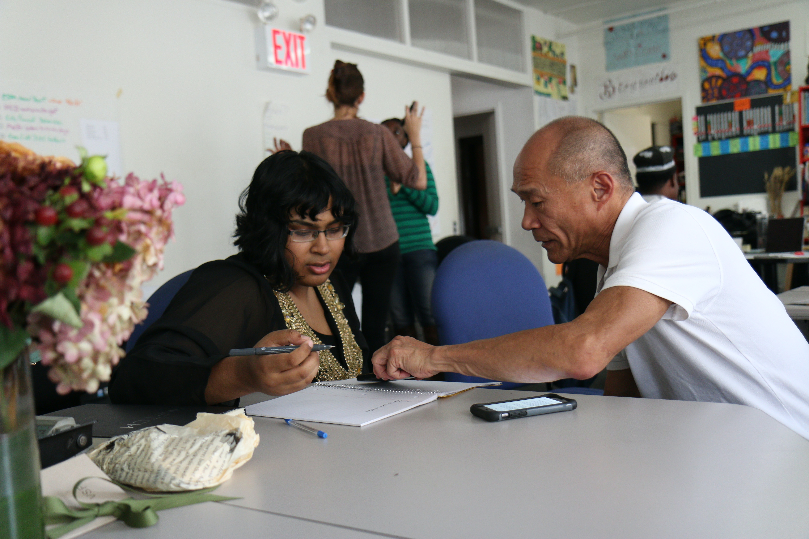

Who are we?
TEAM is a teen education and mentorship organization is to empower and equip teenagers with the necessary skills, knowledge, and support system to succeed academically, personally, and professionally, while fostering their overall growth and well-being.
The goals of a teen education and mentorship organization sponsored by medical students at UCI (University of California, Irvine) and physicians in Orange County for health improvement might include:
1.Health Education: Provide comprehensive health education to teenagers, focusing on topics such as nutrition, exercise, mental health, sexual health, substance abuse prevention, and overall well-being. Equip teens with accurate information and empower them to make informed decisions regarding their health.
2.Disease Prevention: Raise awareness about common health issues affecting teenagers, such as obesity, smoking, drug abuse, sexually transmitted infections, and mental health disorders. Promote preventive measures, healthy lifestyle choices, and strategies for risk reduction.
3.Mentorship and Role Modeling: Pair medical students and physicians with teenagers to serve as mentors and role models. Provide guidance and support in areas such as career exploration in healthcare, academic preparation, and personal development. Foster meaningful relationships that inspire and motivate teens to pursue health-related careers or make informed choices about their health.
4.Community Outreach: Engage in community outreach initiatives aimed at improving the health and well-being of teenagers in Orange County. Collaborate with schools, community centers, and local organizations to deliver health education programs, workshops, and awareness campaigns. Work towards reducing health disparities and promoting equitable access to healthcare resources.
5.Health Advocacy: Empower teenagers to become advocates for their own health and the health of their communities. Teach them how to navigate the healthcare system, understand their rights as patients, and promote health policies that benefit youth. Encourage them to engage in advocacy efforts, such as participating in health-related events, writing to policymakers, or raising awareness about important health issues.
6.Hands-on Experiences: Provide opportunities for teenagers to gain hands-on experiences in the healthcare field. Organize healthcare-related workshops, simulations, and shadowing experiences, allowing them to explore different medical specialties, learn about healthcare careers, and understand the day-to-day work of healthcare professionals.
7. Collaboration and Networking: Facilitate collaboration and networking opportunities between teenagers, medical students, and physicians. Organize events, conferences, and panel discussions that bring together professionals from various healthcare disciplines to share their expertise and provide insights into different career paths in the medical field.
8.Research and Innovation: Encourage teenagers to engage in research projects related to health improvement and innovation. Offer mentorship and resources to support their research endeavors, enabling them to contribute to the advancement of medical knowledge and solutions to health challenges affecting teenagers.
By focusing on these goals, a teen education and mentorship organization sponsored by medical students at UCI and physicians in Orange County can play a vital role in improving the health outcomes of teenagers, promoting their overall well-being, and fostering a future generation of healthcare professionals and advocates.
What we do

Mentorship Registrations and Pairing
Project TEAM has recruited medical student mentors from the University of California, Irvine School of Medicine to guide and support younger students in their pursuit of health professional careers. The program was established by UCI Family Medicine residents with the aim of teaching and mentoring middle school and high school students.The program has a partnership with Orange County School of Arts (OCSA), a public charter school located in Downtown Santa Ana. By joining as a mentee, students will have the opportunity to interact with healthcare professionals, ask questions, receive guidance, and seek educational opportunities.

Additional Projects Underway
To be determined~